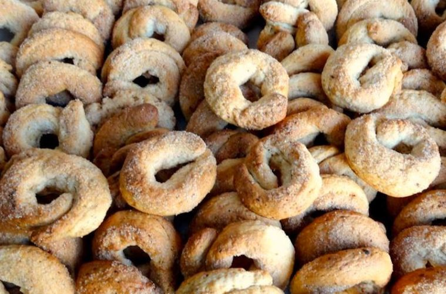

Rosquillas de Anís

Ingredientes:
300g de harina
125ml de aceite
125g de azúcar
1 cucharada de anís
1 cucharada de polvo de hornear
75g de azucar para rebozar
Preparación:
En una olla poner a calentar el aceite con el anís, dejar hervir 2 minutos y retirar del fuego. Dejar enfriar.
En un bol colocar la harina y en el centro echar el aceite con el anís (también se puede colar y retirar el anís).
Agregar azúcar y el polvo de hornear y mezclar todo. Formar una masa blanda. Dejar descansar 10 minutos.
Poner el azúcar para rebozar en un plato y formar bolitas con la masa.
Hacerles un hueco introduciendo el dedeo y rebozarlas con azúcar.
Llevar a una fuente con papel manteca.
Hornear a 180° por 15 a 20 minutos.